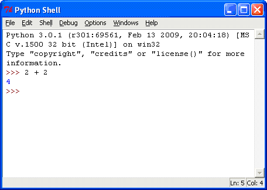
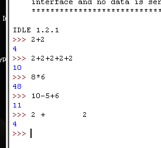
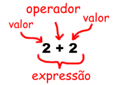
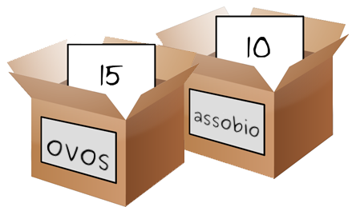

| Ir para o capítulo 1 - Instalando Python | Ir para o capítulo 3 - Strings |
Antes de começarmos a escrever jogos de computador, nós devemos, primeiro, aprender alguns conceitos básicos de programação. Estes conceitos são: valores, operadores, expressões e variáveis. Nós não vamos começar a programar nesse capítulo, mas conhecer estes conceitos e nome das coisas fará com que aprender a programar seja muito mais fácil. Isso porque a maior parte da programação se resume a combinar alguns poucos conceitos simples para formar programas mais avançados.
Vamos começar aprendendo como usar o console interativo do Python.
Para abrir o IDLE no Windows, clique em , depois em , depois em e, finalmente, em . Com o IDLE aberto, vamos fazer um pouco de matemática básica com Python. O console interativo pode funcionar como se fosse uma calculadora. Digite 2+2 no console e aperte a tecla Enter do seu teclado (em alguns teclados, ela pode se chamar Return ou Retorno). Como você pode ver na figura 2-1, o computador deve respoder com o número 4; a soma de 2+2.

Figura 2-1: Digite 2+2 no console.
Como você pode ver, nós podemos usar o console interativo do Python exatamente como se fosse uma calculadora. Isso ainda não é um programa porque nós ainda estamos aprendendo o básico nesse momento. O sinal de + diz ao computador para somar os números 2 e 2. Para subtrair números use o sinal de -, e para multiplicar use um asterisco (*), assim:
| 2+2 | adição |
| 2-2 | subtração |
| 2*2 | multiplicação |
| 2/2 | divisão |
Quando usados dessa forma, +, -, *, e / são chamados de operadores porque eles dizem ao computador realizar a operação escolhida nos números quem estão em volta dele.
Em programação (e também na matemática), números como 4, 0 e 99 são chamados de inteiros. Números com fração ou casas decimais (como 3,5 e 42,1 e 5,0) não são inteiros. Em Python, o número 5 é um inteiro, mas se nós escrevermos ele como 5.0 ele não será mais um inteiro. Números com casas decimais são chamados números de ponto flutuante. Na matemática, 5,0 ainda é considerado um inteiro e é igual ao número 5, mas em programação o computador considera qualquer número com casa decimal como um número não inteiro.
O console interativo do Python é útil para resolver problemas matemáticos rapidamente. Por exemple, tente colocar 2.063 * 0.3581.
Quando eu digo "colocar" eu quero dizer digite alguma coisa no IDLE e então aperte a tecla Enter ou Retorno (Return) do seu teclado. O resulta será algo do tipo:
Isso foi muito mais rápido do que resolvar não mão! Resolver contas rapidamente foi o motivo pelo qual os computadores foram criados. Mas para que o Python entendo que conta nós queremos fazer, nós devemos escreve-lás em um formato específico.
Em Python, nós não usamos vírgula nos números. Nós escrevemos 2.063 ao invés de 2,063. O computador pode fazer o que você pedir para ele rapidamente, mas ele precisa que você diga a ele em um formato específico. Programar um computador é escrever instruções precisas para fazer com que o computador faça exatamente o que você quer porque, na realidade, computadore são burros. Nós precisamos dizer a eles exatamente o que queremos fazer.
Tente digitar alguns destes probelmas matemáticos no console, apertando a tecla Enter depois de cada um deles.
Figura 2-2 mostra como o console interativo no IDLE irá ficar depois que você digitar as instruções acima.

Figura 2-2: Como a janela do IDLE ficará depois de colocar as instruções.

Figura 2-3: Uma expressão é formada por valores e operadores.
Estes problemas matemáticos são chamados expressões. Computadores podem resolver milhÕes destes problemas em segundos. Expressões são formadas por valores (os números) conectados por operadores (os símbolos matemáticos). Vamos aprender exatamente o que valores e operadores são.
Como você pode ver nas últimas expressões do exemplo acima, você pode colocar quantos espaços você quiser entre os inteiros e estes operadores (mas tenha certeza de sempre começar no início da linha, sem espaços em branco na frente).
Números são um tipo de valor. Inteiros são um tipo de número. Mas, embora inteiros sejam números, nem todos os números são inteiros (por exemplo, frações e números com casas decimais como 2.5 são números que não são inteiros).
Isso é como um gato é um tipo de animal de estimação, mas nem todos os animais de estimação são gatos. Alguém poderia ter como animal de estimação um cachorro ou um carangueijo ermitão. Uma expressão é formada por valores (como os inteiros 8 e 6) conectados por um operador (como o símbolo de multiplicação *). Um único valor sozinho também é considerado uma expressão.
No próximo capítulo, nós vamos aprender como trabahar com texto nas expressões. Python não é limitado apenas à números. É muito mais do que uma calculadora rebuscada!
Quando um computador resolve a expressão 10 + 5 e encontra o valor 15, nós dizemos que ele avaliou a expressão. Avaliar uma expressão reduz a expressão a um único valor, da mesma forma que resolver um problema matemático reduz o problema a um único número: a resposta.
As expressões 10 + 5 e 10 + 3 + 2 possuem o mesmo valor, pois as duas são avaliadas em 15. Até mesmo valores únicos são considerados expressões: a expressão 15 é avaliada para o valor 15.
Entretanto, se nós apenas digitarmos 5 + no console interativo, você receberá uma mensagem de erro.
Esse erro ocorreu pois 5 + não é uma expressão. Expressões possum valores conectados por operadores, mas o operador + sempre espera conectar duas coisas em Python. Nós demos a ele apenas um. Por isso a mensagem de erro apareceu. Um erro de sintaxe significa que o computador não entende a instrução que você deu a ele porque você a digitou incorretamente. Python sempre irá mostrar uma mensagem de erro se você enviar uma instrução que ele não consegue entender.
Isso pode não parecer importante, mas grande parte da programação de computadores não é apenas dizer ao computador o que ele deve fazer, mas também saber exatamente como dizer isso ao computador.
Expressões também podem conter outras expressões. Por exemplo, nas expressões 2 + 5 + 8, a parte 2 + 5 é uma expressão. Python avalia 2 + 5 em 7, então a expressão original se transforma em 7 + 8. Python então avalia essa expressão em 15.
Pense em uma expressão como se fosse uma pilha de panquecas. Se você colocar duas pilhas de panquecas juntas, você ainda terá uma pilha de panquecas. E uma grande pilha de panquecas pode ser formada de pilhas menores de panquecas que foram colocadas juntas. Da mesma forma, expressões podem ser combinadas para formar expressões maiores. Mas não importa o quão grande uma expressão é, ela também será avaliada em uma única resposta, exatamente como 2 + 5 + 8 é avaliada em 15.
When we program, we will often want to save the values that our expressions evaluate to so we can use them later in the program. We can store values in variables.
Think of variables like a box that can hold values. You can store values inside variables with the = sign (called the assignment operator). For example, to store the value 15 in a variable named "spam", enter spam = 15 into the shell:

Figure 2-4: Variables are like boxes that can hold values in them.
You can think of the variable like a box with the value 15 inside of it (as shown in Figure 2-4). The variable name "spam" is the label on the box (so we can tell one variable from another) and the value stored in it is like a small note inside the box.
When you press Enter you won't see anything in response, other than a blank line. Unless you see an error message, you can assume that the instruction has been executed successfully. The next >>> prompt will appear so that you can type in the next instruction.
This instruction (called an assignment statement) creates the variable spam and stores the value 15 in it. Unlike expressions, statements are instructions that do not evaluate to any value, which is why there is no value displayed on the next line in the shell.
It might be confusing to know which instructions are expressions and which are statements. Just remember that if the instruction evaluates to a single value, it's an expression. If the instruction does not, then it's a statement.
An assignment statement is written as a variable, followed by the = equal sign, followed by an expression. The value that the expression evaluates to is stored inside the variable. The value 15 by itself is an expression. Expressions made up of a single value by itself are easy to evaluate. These expressions just evaluate to the value itself. For example, the expression 15 evaluates to 15!
Remember, variables store values, not expressions. For example, if we had the statement, spam = 10 + 5, then the expression 10 + 5 would first be evaluated to 15 and then the value 15 would be stored in the variable, spam.
The first time you store a value inside a variable by using an assignment statement, Python will create that variable. Each time after that, an assignment statement will only replace the value stored in the variable.
Now let's see if we've created our variable properly. If we type spam into the shell by itself, we should see what value is stored inside the variable spam.
Now, spam evaluates to the value inside the variable, 15.
And here's an interesting twist. If we now enter spam + 5 into the shell, we get the integer 20, like so.
That may seem odd but it makes sense when we remember that we set the value of spam to 15. Because we've set the value of the variable spam to 15, writing spam + 5 is like writing the expression 15 + 5.
If you try to use a variable before it has been created, Python will give you an error because no such variable would exist yet. This also happens if you mistype the name of the variable.
We can change the value stored in a variable by entering another assignment statement. For example, try the following:
The first time we enter spam + 5, the expression evaluates to 20, because we stored the value 15 inside the variable spam. But when we enter spam = 3, the value 15 is replaced, or overwritten, with the value 3. Now, when we enter spam + 5, the expression evaluates to 8 because the value of spam is now 3.
To find out what the current value is inside a variable, just enter the variable name into the shell.
Now here's something interesting. Because a variable is only a name for a value, we can write expressions with variables like this:
When the variable spam has the integer value 15 stored in it, entering spam + spam is the same as entering 15 + 15, which evaluates to 30. And spam - spam is the same as 15 - 15, which evaluates to 0. The expressions above use the variable spam twice. You can use variables as many times as you want in expressions. Remember that Python will evaluate a variable name to the value that is stored inside that variable, each time the variable is used.
We can even use the value in the spam variable to assign spam a new value:
The assignment statement spam = spam + 5 is like saying, "the new value of the spam variable will be the current value of spam plus five." Remember that the variable on the left side of the = sign will be assigned the value that the expression on the right side evaluates to. We can also keep increasing the value in spam by 5 several times:
When we program we won't always want to be limited to only one variable. Often we'll need to use multiple variables.
For example, let's assign different values to two variables named eggs and fizz, like so:
Now the fizz variable has 10 inside it, and eggs has 15 inside it.

Figure 2-5: The "fizz" and "eggs" variables have values stored in them.
Without changing the value in our spam variable, let's try assigning a new value to the spam variable. Enter spam = fizz + eggs into the shell then enter spam into the shell to see the new value of spam. Can you guess what it will be?
The value in spam is now 25 because when we add fizz and eggs we are adding the values stored inside fizz and eggs.
Changing the value stored inside a variable is easy. Just perform another assignment statement with the same variable. Look what happens when you enter the following code into the interactive shell:
Initially, the spam variable had the integer 42 placed inside of it. This is why the first print(spam) prints out 42. But when we execute spam = 'Hello', the 42 value is tossed out of the variable and forgotten as the new 'Hello' string value is placed inside the spam variable.
Replacing the value in a variable with a new value is called overwriting the value. It is important to know that the old value is permanently forgotten. If you want to remember this value so you can use it later in your program, store it in a different variable before overwriting the value:
In the above example, before overwriting the value in spam, we copy that value to a variable named oldSpam. At that point, both spam and oldSpam store the value 42. On the next line, the string 'Hello' is stored in spam but oldSpam is left untouched.
In this chapter you learned the basics about writing Python instructions. Python needs you to tell it exactly what to do in a strict way, because computers don't have common sense and only understand very simple instructions. You have learned that Python can evaluate expressions (that is, reduce the expression to a single value), and that expressions are values (such as 2 or 5) combined with operators (such as + or -). You have also learned that you can store values inside of variables so that your program can remember them in order to use them later on.
In the next chapter, we will go over some more basic concepts, and you will write your first program!
| Go to Chapter 1 - Installing Python | Go to Chapter 3 - Strings |